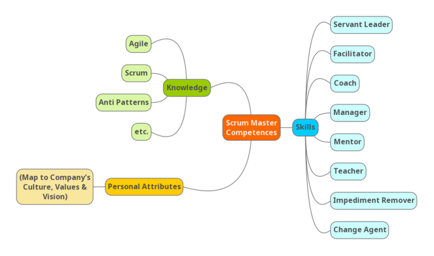
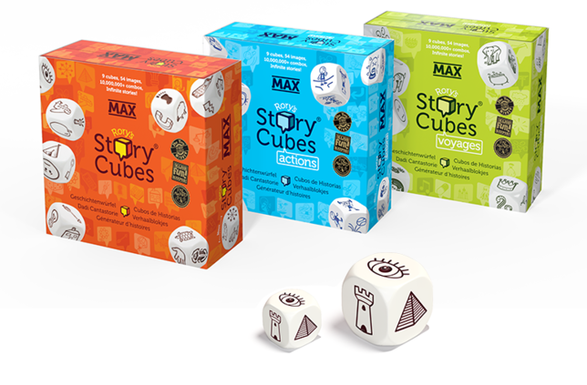

FesLe latest blog articles:
How to recruit an 8 Stances Scrum Master
In this article we'll share the approach we developed to recruit Scrum Masters using Competency-based recruitment process, Barry Overeem’s 8 stances of Scrum Master, and Behavioral Driven Development. [...]
How I've used Story Cubes too break ice between Teams from different countries
In this short article I will share my facilitation guide for a creative Ice Breaker exercise using Rory's Story Cubes® for teams working on the same product but in different locations.
How to recruit an 8 Stances Scrum Master
In this article Tomasz Moranski and myself will share the approach that we together with Mateusz Klimczyk developed to recruit Scrum Masters using Competency-based recruitment process, Barry Overeem’s 8 stances of Scrum Master, and Behavioral Driven Development.
Before you go any further you must know that we won't share our recruitment process questions :) Instead, we will tell you how to develop your own process.
Backstory:
The topic of recruitment of a Scrum Master isn’t something new. But when we faced the challenge to recruit new scrum masters in our company we knew there is space for improvements and that we want to create our own process. This conclusion emerged from our previous experience in being recruited for a Scrum Master position and from the approach on how does HR recruit experienced leaders.
The main flood in mainstream approach:
Most companies recruit scrum masters asking theoretical questions (like in the Agile Imposters 2.0 38 questions [0] ) or by performing hypothetical case studies scenarios during the interview meeting and asking the recruited person to imagine a situation and then looking for particular candidate behaviors (like in Case Studies for Conflict Resolution: A key element in civil rights training [3] ).
Although these methods bring value and can be helpful they introduce the following downsides:
- The answers on theoretical questions can be memorized and learned upfront with no practical experience whatsoever. So we have no clue if the candidate will really do the job.
- The hypothetical case-study scenarios during the interview don’t guarantee that the candidate will act in the same way in real life when faced with real situation involving people she will be working with. Additionally, in that approach we assume in advance that the best way on how to solve problems from the hypothetical scenarios is Our Way -which is simply not true (even if our solution worked in a certain situation, "You could not step twice into the same river"- Heraclitus).
What did we do differently:
We wanted to get true Scrum Masters. We wanted to get experienced people proven in field of Scrum and Agile. In order to achieve this we decided to create our Scrum Master's recruitment process in line with the Competency-based recruitment approach [2] .
Why do we call it BDD? :)
What we changed in the process is that we didn't start from building question first, but instead we started by defining expected behaviors.
In order to do so we created a competency map [4] based on Barry Overeem’s “The 8 Stances of a Scrum Master” described at Scrum.org [1] where he defines the Scrum Master as a Servant Leader, Facilitator, Coach, Manager, Mentor, Teacher, Impediment Remover, and Change Agent.

We knew what competencies we are looking for but we didn't knew what behaviors will define those competencies. We started to ask ourselves what behaviors do best define e.g a great facilitator who is a neutral person accepted by the group with no decision making, equipped with facilitation tools, helping the group identify potential solutions and improving the process of decision making, increasing the efficiency of meetings and following through with action points.
Surprisingly this was the hardest part. But when we finally defined the expected behaviors it was really easy to form proper questions around them. We used the Funnel [5] and S.T.A.R [6] [7] tools for that because they are great for checking the candidates practical experience.

Example: Facilitator - one of the expected behaviors: encourages people in the group to take an active part
- Give an example of a situation where you encourage people in the group to take an active part?
- What was the group's challenge?
- What approach did you choose? What actions did you undertake?
- What was the result?
This way we designed a checklist of questions that helped us evaluate our candidates. In addition, we solved another problem. Before our checklist, we evaluated every candidate with different questions relaying on our intuition. Now, we have one candidate profile build around what's most important for us, allowing us to continuously improve our process. Furthermore, these questions and behaviors have a great use for annual performance reviews.
Our experience in practice:
It turned out quite difficult to go through all the questions for all the 8 stances in a reasonable time. Luckily, some questions verified more then one stance at a time. We ordered the questions to maximize the amount of expected behaviors shared in one candidate's answer. TIP: prioritize the questions by the potential they share to expose the candidate's behaviors most.
Summary:
To create your own recruitment process go through these steps:
- Create a competency map for the Scrum Master Position in your company [4]
- Define what behaviors imply those competences [1]
- Prepare Funnel and S.T.A.R questions for those behaviors [5] [6] [7]
- Experiment what questions bring most value
- Gather candidate's answers to inspect and improve your process
Thanks for reading. If you have any questions and like the article, please comment.
Bibliography:
[0] Free Ebook: 47 Scrum Master Interview Questions to Identify Suitable Candidates
[1] The 8 Stances of a Scrum Master
[2] Competency-based recruitment
[3] CONFLICT RESOLUTION: CASE STUDIES
[4] Competency Mapping - A Search For Excellence
[5] Questioning Techniques (Funnel Questions)
[6] How to Use the STAR Interview Response Technique
[7] How To Master the STAR Method For Interview Questions
Article author: Błażej Drobniuch
Back to top Contact usHow I've used Story Cubes too break ice between Teams from different countries
In this short article I will share my facilitation guide for a creative Ice Breaker exercise using Rory's Story Cubes® for teams working on the same product but in different locations.
Backstory:
The team I've recently joined from Krakow, Poland was visiting our headquarters in Austria and meeting other people involved in the development of a game we just finished. We had planned a big retrospective and meetings related to the next important milestones.
What I needed was a way to create a safe and relaxing environment for me and other team members, especially new ones, and those not so comfortable in speaking English. My goal was to put our fears aside, build relationships, focus on our goals and recharge batteries after a long car trip. In order to achieve this, I've proposed to start with an Ice Breaker exercise.
I was politely warned:
"But please don't force us to touch each other"
Hence I knew they probably had previous experience with irrelevant, pointless, or poorly designed icebreakers. So in order to make it work it had to be fun, creative and non-physical.
I've searched trainers Facebook groups and found Mateusz Kałamarz (Design Thinking Facilitator) who shared his experience with Rory's Story Cubes®.
I only had to redefine the game mechanics to achieve what I've intended. Finally I've created a 15 minutes Ice Breaker which served its purpose surprisingly well.
About Rory's Story Cubes®:
"Rory's Story Cubes® is the iconic storytelling game that fosters imagination and connection across generations."[1]
"Rory’s Story Cubes® originated as a creative problem solving tool for adults, way back in 2004. Rory was a creativity trainer and coach, working with individuals and organisations to look at problems in different ways. The idea was conceived using an invention technique called ‘Advanced Civilisation’ (by Win Wenger)."[1]
Ice Breaker Facilitation guide:
Goals:
- integrate teams working on the same product
- get everyone involved 100% right from the start
- help new members get to know each other
- creative warm-up on the product topic
- begin an interesting conversation among participants
- practice English
- prevent another boring meeting
Handouts:

- 4x Rory's Story Cubes® sets (e.g stories, voyages, actions, fantasia),
- For each participant a Facilitation guide for the Ice Breaker exercise in A4 format.
Agenda:
- [3min] explaining the purpose and goals of the ice breaker, giving out handouts, introducing the Rory's Story Cubes®,
- [6min] part one (pairing up and storytelling),
- [6min] part two (sharing stories in a big circle).
Instructions part one (pairing up and storytelling):
- randomly take one STORY CUBE from the pull of 36 cubes on the table
- pair up with someone you know least
- roll the Cube dice
- your task is to learn a story from the life of your pair/mate related to the icon on the cube
- you've got 2 minutes each
- (if there is still time)* roll with your pair/mate two dices and create a story about the product you are developing basing on those two story cubes
Instructions part two (sharing stories in a big circle):
- gather in a circle with the rest of participants (next to your pair/mate)
- introduce your pair/mate
- tell what picture was on the dice
- tell what story did you learn about your pair/mate
- together with your pair/mate tell the short story about the product (If you had time to create it)
Facilitation Guidelines:
- Take your time to introduce Rory's Story Cubes® (they arouse curiosity so the participants don't focus on the instructions).
- It's common that participants ask the facilitator what particular image on the cube means. Tip: Just tell them it's up to them.
- When working in pairs make sure they understand the task and stay focused, remind them about the additional task to "create a story about the product you are developing" when they still have some time left.
- When presenting the stories in groups make sure they introduce their pair/mate by name, and show the whole group what was their picture on the Story Cubes.
Summary:
The Ice Breaker worked really well and I received positive feedback. We had a lot of fun, The Ice was broken and we gained new energy to follow up with the big retrospective. I hope it will work similar for you.
Other scenarios for the ice breaker:
- team retrospectives
- on-boarding of new team members
- brainstorming sessions
- group coaching sessions
- joining new team as a Leader, Scrum Master etc.
Please let me know if this article was helpful in the comments below.
Bibliography:
Article author: Błażej Drobniuch
Back to top Contact us